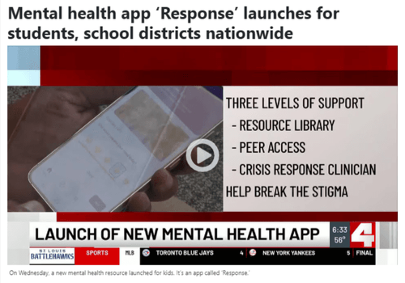
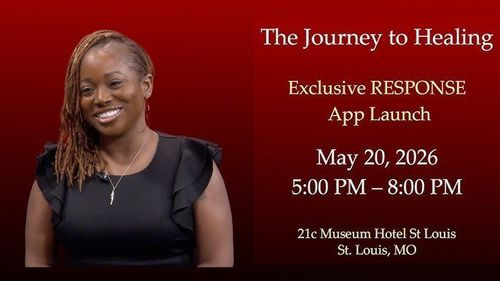

Behavioral Health Response (BHR) is a nonprofit organization comprised of highly trained clinicians and professionals who serve individuals in need with dignity, respect, excellence, and compassion. Through 24-hour access to mental health and crisis response services, BHR delivers timely, trauma-informed care to communities nationwide.
With more than 30 years of experience, BHR has established itself as a trusted leader in behavioral health response. While BHR maintains physical service locations in St. Louis, Missouri, the organization provides telephonic and remote services across 32 states — supporting a growing national footprint and ensuring access to care across the country.
Missouri's largest 988 provider. Nationally recognized.
BHR is aligned to SAMHSA's National Guidelines as a leader in crisis care — partnering with 988 and local 911 systems to de-escalate crises, reduce unnecessary emergency responses, and connect individuals to the support they need.
SAMHSA Recognition
Featured in SAMHSA's National Guidelines for crisis-care leadership.
988 Partnership
Missouri's largest 988 Suicide & Crisis Lifeline provider since 1994.
911
911 Crisis Diversion
Crisis-call diversion specialists work alongside St. Louis-area 911 operators to redirect non-emergency calls.
80,219
Calls Answered
Crisis-hotline calls answered in FY2025 alone.
OUR SERVICES
Make mental health care a priority.
Using the latest technology and knowledge, we've developed services designed to address a variety of needs.
We provide help and guidance when it's needed most. Our trained, compassionate behavioral-health clinicians provide every caller with a customized clinical intake and assessment to determine the best care plan possible.
Community-based response teams meet individuals where they are, providing in-person de-escalation, assessment, and warm hand-offs to ongoing care and local resources.
Our leaders, board members, and advisors work to expand access to behavioral health care and crisis support. Meet the people breaking down barriers and prioritizing mental health nationwide.
Here's where you can keep up with the latest media and podcast interviews, TV appearances, and news featuring members of our team.

▶
Video
Mental-health app 'Response' launches for students, school districts nationwide

▶
Article
STLTV | Reaching Students Before the Crisis: BHR Launches Response
▶
Article
10 Daily Habits That Actually Improve Your Mental Health (Backed by Science)
We Save Lives◆We Save Lives◆We Save Lives◆We Save Lives◆We Save Lives◆We Save Lives◆We Save Lives◆We Save Lives◆
CAREERS
Working at Behavioral Health Response.
We're always looking for compassionate individuals to add to our diverse and inclusive team. If you are a mental-health professional in social work, counseling, or psychology, we invite you to apply.